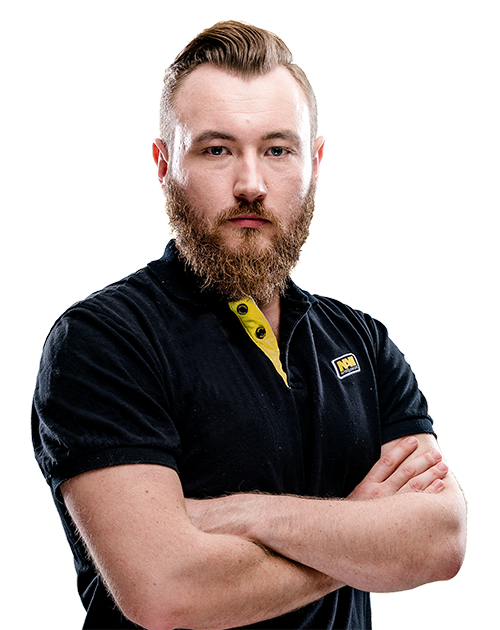
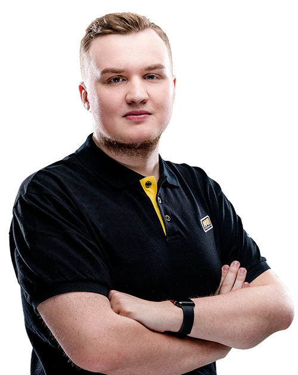
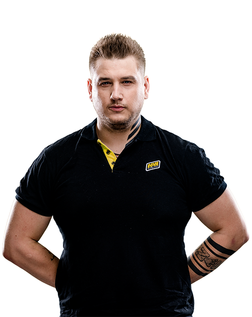
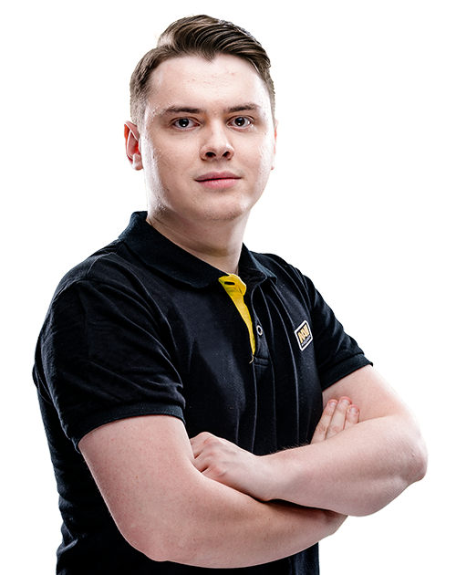
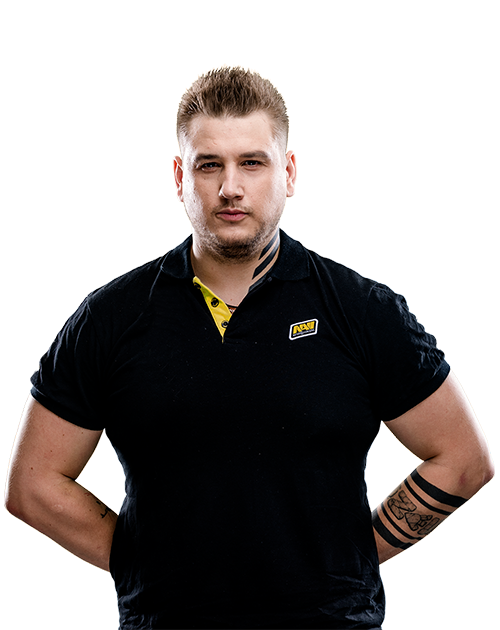
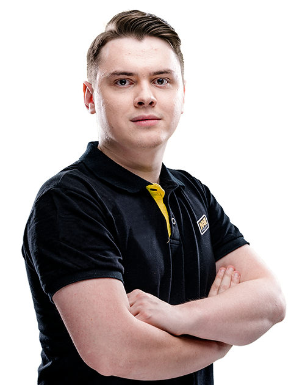

NAVI
(з лат.- Народжений перемагати)
Natus Vincere (з лат. — «Народжений Перемагати»), скорочено Na'Vi — українська мультиігрова кіберспортивна організація. Команда вперше в історії кіберспорту 2010 року виграла три головних турніри за один рік — World Cyber Games, Intel Extreme Masters, Electronic Sports World Cup. 21 серпня 2011 року виграла приз 1 000 000 доларів США у грі Dota 2. Має свої команди в різних ігрових дисциплінах, зокрема Dota 2, Counter-Strike, FIFA, StarCraft II, World of Tanks, League of Legends, Fortnite
  



Edward
Первые матчи провёл в составе Харьковской команды, представляя клуб «CyberCity 2000», в 2001—2002 годах. В клубе ежемесячно проводились турниры, а команда в составе которой был Иван стабильно занимал первые места. Уже тогда Иван показал себя как перспективный игрок в данной дисциплине. В состав команды входили: Роман «Overmaster» Исаков, Филипп «LIHO», Александр «Doberman», Алексей «AlexMAN» Зубриенкоm, Денис «Sonic`» Волненко. Вскоре команда распалась, Edward же был приглашен в pro100. Докладніше
Flamie
Незважаючи на молодий вік, в свої 18 років flamie вже встиг пограти у багатьох відомих в СНД колективах. Послідовно, але стрімко flamie піднімався по кар'єрних сходах. Виступав під прапорами таких команд, як USSR, dAT Team і HellRaisers, з якими хоч і не зміг виграти щось значуще, але виразно «засвітився» і проявив свої найкращі якості. Першими серйозними турнірами для Єгора стали ESL One Cologne 2014 (у складі dAT Team) і ESL One Katowice 2015 (в команді HellRaisers). Докладніше
S1mple
Карьера Александра «s1mple» Костылева началась в 2013 году, s1mple побывал в таких коллективах как LAN DODGERS, A-Gaming, Courage Gaming.1 февраля 2014 года, s1mple, получает бан от ESL на 2 года за читерство и попытку обхода бана. В результате игрок не смог выступать на официальных турнирах, которые поддерживаются Valve до 2016 года.
ДокладнішеZeus
Карьеру киберспортсмена Даниил «Zeus» Тесленко начал в 2002 году, играя в одной из сильнейших команд того времени — Arsenal. Далее его карьера связала его с Edward в 2004 году, тогда они выступали под тегом pro100. Спустя три года, уже в составе Virtus.Pro, Zeus и его напарники посетили большинство турниров в СНГ. В турнире ASUSCup, где одерживали победу 9 раз.
ДокладнішеElectronic
Свой путь Денис начал в середине 2015 года, вступив в команду ACES. Позже он присоединялся к таким коллективам как Rebels, Team Empire, NokSuKao. Шарипов часто менял команды, но все изменилось, так как после игр в коллективах он был замечен организацией Flipsid3 Tactics.
ДокладнішеIT-ЕЛІТ © 2019р м.Івано-Франківськ